Я написал Claude пару фраз, и он с нуля собрал в REAPER демо-песню, оживил партии, подключил гитару Odin III и свёл всё в −10 LUFS. В этой статье расскажу, что я просил, что сделала связка инструментов на каждом шаге и где она ошибалась.
Это чистая демка для проверки связки скиллов, MCP и скриптов. Сделана с первого запроса и двух уточнений. По пути я доделывал сами скиллы: подключение Odin, его артикуляции, борьбу с «механистичностью».
Продолжение: часть 2 — вокал. Claude + REAPER + YuE2 — Claude пишет вокальную партию к этой демке, нейросеть её поёт.
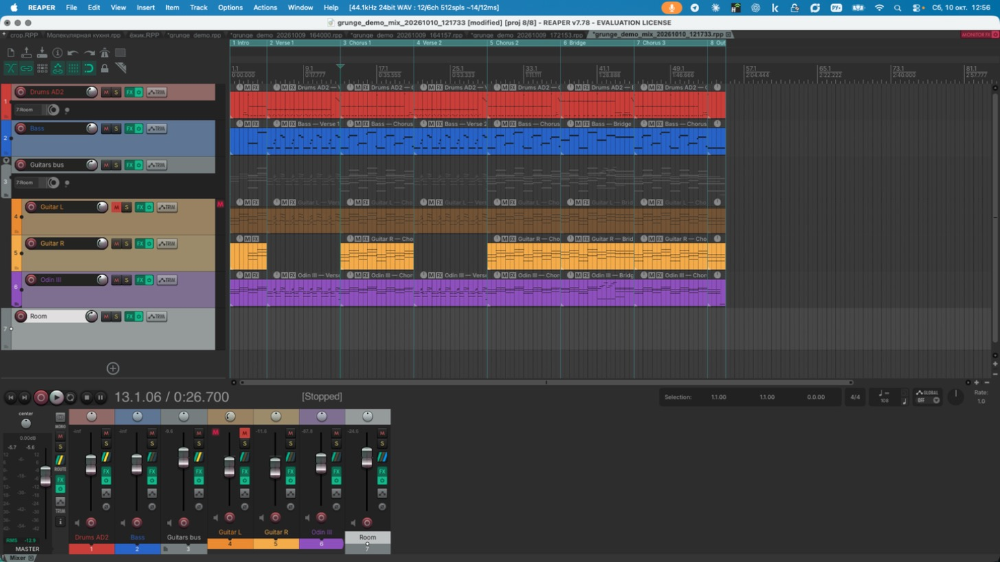
Связка инструментов
| Звено | Что делает |
|---|---|
| Claude Code | агент: читает файлы, пишет и запускает скрипты, измеряет результат |
| MCP-сервер REAPER | управляет открытым REAPER: дорожки, FX, параметры, транспорт |
| ReaScript (Lua) | скрипт передаётся в запущенный REAPER командой REAPER -nonewinst script.lua: вставка дорожек, плагинов, рендер, чтение подавления компрессоров |
| Python | переводит партии Claude в MIDI, собирает .rpp, анализирует рендер (LUFS, спектр, маскировка) |
| Computer use | скриншоты окон, список keyswitch'ей из интерфейса Odin |
| Скиллы Claude | reaper-song (демо с нуля), reaper-mix (сведение), ODIN.md (приёмы Odin): найденное записано, чтобы в следующий раз не искать |
Скрипты — в комплекте для скачивания, папка scripts/:
| Скрипт | Назначение |
|---|---|
scripts/song_kit.py |
готовые детали: ноты инструментов, приёмы Odin, дроби, «живость», дорожки с VST, сборка проекта |
scripts/songs/grunge_demo.py |
то, что Claude сочинил в диалоге: форма, аккорды, партии и журнал «запрос → что поменял» |
scripts/mix_probe.py |
рендер стемов и мастера + замер: LUFS-I/LRA/true peak, кто занимает полосу, стерео, тональный баланс |
scripts/mix_apply.py |
план сведения (JSON) → плагины с нужными значениями |
scripts/mix_calibrate.py |
порог компрессора под целевое подавление: REAPER играет отрезок, скрипт читает подавление |
1. «Сделай проект, посмотри, какие есть инструменты»
Я попросил гранжевое демо: куплет, припев и бридж. Ударные — в Addictive Drums, бас — собрать из семплов открытого плотного баса, гитара — Ample.
Claude прочитал списки плагинов REAPER (reaper-vstplugins_arm64.ini) и проверил, что реально работает:
| Партия | Инструмент |
|---|---|
| бас | RS5K (сэмплер REAPER) на семплах Finger Bass, 12 нот от E1 до D#2 |
| ударные | Addictive Drums 2, кит Extreme |
| гитара | Ample Guitar VC, Odin III. На первом этапе — Ample Guitar VC → Guitar Rig 7, пресет «AD In The Desert»; Odin III со своим усилителем добавлен в шаге 3 |
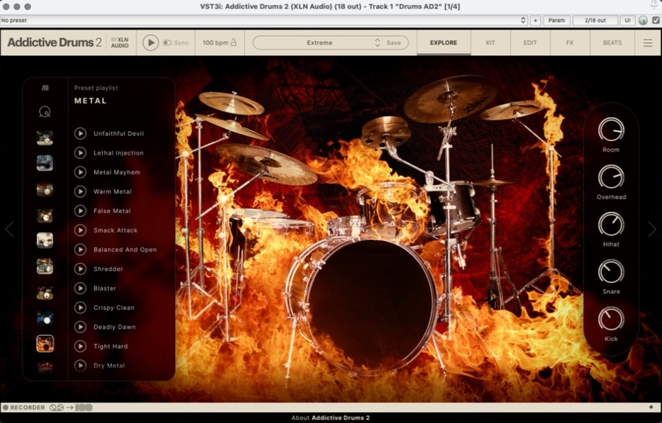 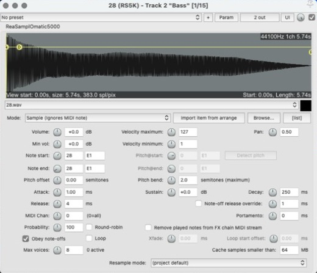 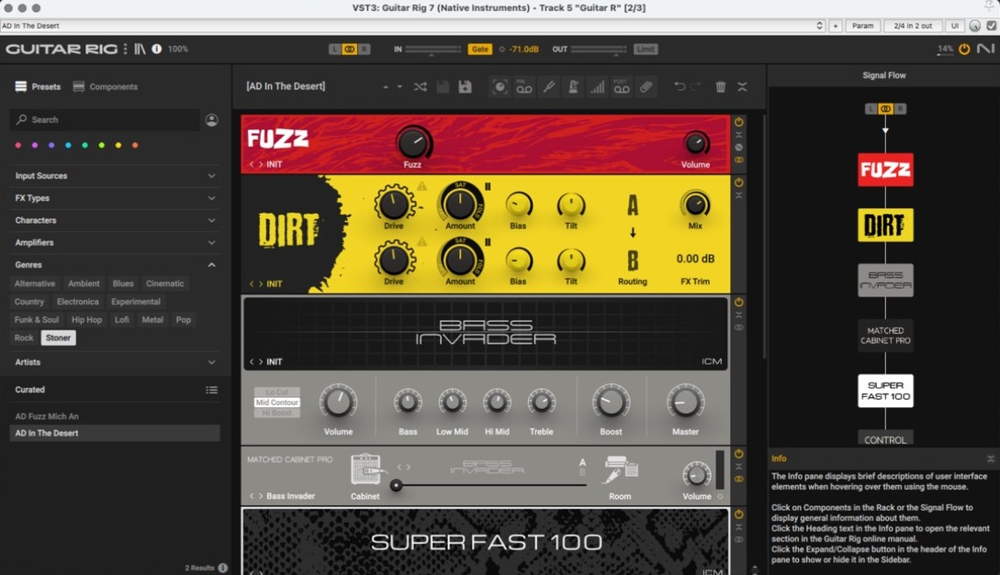
Песня: ми-минор, 108 bpm, около 2 минут. Структура: Intro – Verse – Chorus – Verse – Chorus – Bridge – Chorus – Outro, каждая секция — регион REAPER.
Партии сочинил Claude и записал нотами прямо в MIDI через Python-скрипт — без специализированных музыкальных генераторов, которые выдают готовый WAV. Поэтому видна и правится каждая нота. Две вещи пришлось учесть:
- Addictive Drums 2 — это не General MIDI. Нота 42 в GM — закрытый хэт, а в AD2 — сайдстик. Партия пишется сразу в нотах AD2.
- Нижняя нота Ample Guitar — E2. Drop D (D2) не звучит, поэтому стандартный строй.
Проверка шла по рендеру, а не «на глаз». У гитары в 24 из 24 тактов припева сильнейшая нота совпала с аккордом. У баса из 349 нот 325 прозвучали верно. Промахи давал октавный подхват вверх: у сэмплера нет нот выше D#2, и подхват заменили полутоном к следующему аккорду.
2. «Звучит механистически»
Я сказал, что перебивки малого слишком ровные: «прям механизм бьёт». А вот тома и хэты получились хорошо.
| На слух | Что поменяли |
|---|---|
| дробь малого — ровная линейная лесенка громкости | крещендо по кривой, ведущая рука сильнее, акцент на долю, тихие удары ободом (Shallow Hit), форшлаги, к концу дробь подгоняет |
| одинаковые сбивки | у каждого припева своя: шестнадцатые, дробь в тома, триоли |
| «сделай велосити плавающей, на гитарах тоже» | громкость медленно дрейфует по фразам (ударные ±6, бас ±7, гитары ±10), аккорд бьётся одной рукой (общий сдвиг ±6), струны разнесены на 3.5 мс |
Что сделано по шагам:
- Причина «механизма». Все удары дроби шли одной нотой, велосити росла по прямой, шестнадцатые стояли ровно в сетке. На томах звучало живо, потому что удары разнесены по разным барабанам.
- Дробь снейра. Громкость растёт неравномерно: сначала медленно, к концу быстрее. Ведущая рука бьёт сильнее, первый удар доли с акцентом, плюс случайный разброс. Тихие удары — по краю пластика (Snare Shallow Hit в AD2), громкие — открытым ударом, иногда с форшлагом.
- Подгон. К концу сбивки барабанщик чуть торопится: отклонения от сетки от −11 до +4 мс вместо нуля.
- Пример. Перед первым припевом было 86→124 ровной лесенкой, стало
102, 73, 87, 87, 115, 99, 115, 122. - Сбивки. У каждого припева своя: первый — дробь шестнадцатыми, второй — дробь, уходящая в тома, третий — триоли. Конец бриджа тоже заканчивается томами.
- Дрейф велосити. Громкость медленно гуляет по фразам, опорная точка раз в два такта: ударные ±6, бас ±7, гитары ±10. В первом припеве средняя велосити гитары по тактам 101–116, в куплете 76–91.
- Аккорд целиком. Все ноты аккорда получают общий сдвиг ±6, как один удар рукой, и сверху ±2 на каждую ноту.
- Гитарные аккорды. Струны звучат не в одну точку, а с разносом около 3.5 мс, как при ударе медиатором вниз. Об этом я не просил — Claude предложил сам и пообещал убрать, если не понравится.
Хэты не трогали: они уже звучали хорошо. Отзыв Claude записал в скилл — следующие демо сразу будут с этим.
Так это выглядело в диалоге:
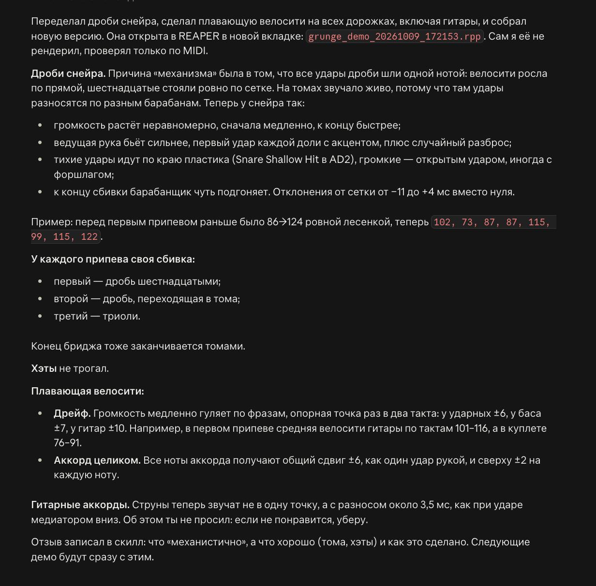
3. «Подключи Odin III, без Guitar Rig, на его примочках»
Мануала Odin в сети не нашлось. Claude открыл список keyswitch'ей прямо в интерфейсе плагина и снял его со скриншота, а значит, и для меня тоже. Полная таблица — в скилле, в файле ODIN.md.
| Приём | Как включается |
|---|---|
| флажолет, пинч, скрейп медиатором, бенды, слайды, тремоло | ноты-keyswitch'и ниже C2 (0–35), держать, пока звучит нота |
| глушение ладонью трёх степеней | velocity 25–34 / 15–24 / 0–14 |
| визг (pinch harmonic) | velocity 127 |
Отсюда грабли: «плавающая» велосити могла сама дотянуть до 127 и дать случайный визг. Для Odin потолок 126, а 127 ставится только там, где визг нужен.
В партии Odin:
- в куплетах глушёные чаги;
- скрейп медиатором перед припевом;
- въезд слайдом в первый аккорд припева;
- визг в конце припевов;
- натуральные флажолеты в бридже;
- съезд вниз в конце.
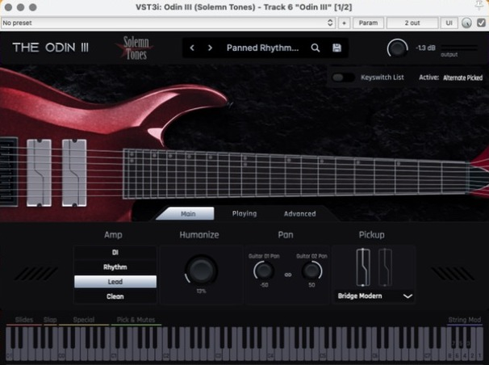
Усилитель Odin в итоге стоит Lead, звукосниматель Bridge Modern: я переключил их сам после первого прослушивания.
4. «Сделай сведение: не хватает склеенности, чёткости и плотности на гитарах. Мастеринг в −10 LUFS»
Сначала замер
Claude отрендерил стемы и мастер и посчитал громкость по стандарту BS.1770-4. Свой измеритель сверил с эталонным синусом и с измерителем REAPER, расхождение 0.01 LU.
| Жалоба | Что показал замер |
|---|---|
| нет чёткости | гитары на 2.5–5 кГц на 10–17 дБ тише мастера, весь верх держат тарелки |
| нет плотности | провал середины 315 Гц–1 кГц на 2–3.4 дБ |
| муть | горбы на 79 / 125 / 198 Гц: +2.6 / +4.2 / +2.7 дБ, в полосе 160–315 спорят бас и обе гитары |
| нет склейки | шины не обработаны, ударные «прыгают» (LRA 6.3 против ~2 у остальных) |
| мастер | −10.45 LUFS, но пики +0.27 dBTP — за нулём |
Потом литература
Фоновый агент собрал числа из Sound On Sound, Nail The Mix и блогов. Каждое значение в плане сведения подписано: либо «из замера», либо «из источника». Например, шина ударных 2:1, атака 30–35 мс, около 3 дБ подавления (SOS Mix Rescue). Гитары: срез низа 100–120 Гц, муть 250–500 Гц. Склейка на мастере: 2:1, 1–3 дБ.
Как устроен микс
| Дорожка | Инструмент | Фейдер | Обработка | Посыл в Room |
|---|---|---|---|---|
| Drums AD2 | Addictive Drums 2 + Ozone Vintage Limiter | −5.5 дБ | EQ → компрессор шины | −5 дБ |
| Bass | RS5K × 12 (Finger Bass) | −5.0 дБ | EQ → сатурация «рык» → компрессор | — (бас в ревер не идёт) |
| Guitars bus (папка) | — | 0 | EQ плотности → сатурация → компрессор шины | −9 дБ |
| ├ Guitar L | Ample + Guitar Rig 7 | заглушена | — | |
| ├ Guitar R | Ample + Guitar Rig 7 «AD In The Desert» | −10.3 дБ, центр | EQ гитары | |
| └ Odin III | Odin III, Lead, Bridge Modern | −6 дБ | EQ гитары | |
| Room | — | 0 | Pro-R 2 → EQ | |
| Master | — | 0 | (Ozone выключен) EQ → склейка → лимитер |
Плагины и параметры
Ударные.
| Плагин | Параметры | Зачем |
|---|---|---|
| Pro-Q 4 «EQ ударных» | Bell 400 Гц −2 дБ Q 1; High Shelf 5 кГц −3.5 дБ | место гитарам в середине; тарелки держали весь верх |
| Pro-C 2 «шина ударных» | Bus, 2:1, колено 6, атака 30 мс, release 100 мс, порог −5.5, makeup +3 | склейка ударных, ~3 дБ подавления |
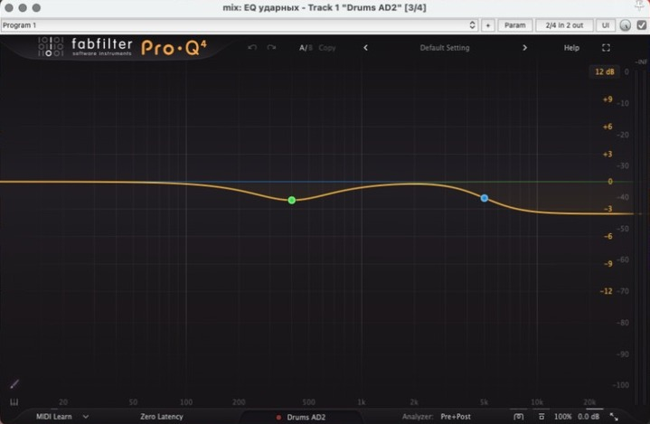 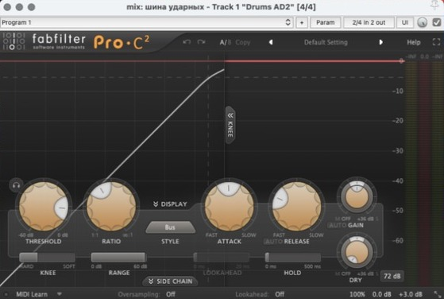
Бас.
| Плагин | Параметры | Зачем |
|---|---|---|
| Pro-Q 4 «EQ баса» | Low Cut 35 Гц 24 дБ/окт; Bell 125 Гц −4 дБ Q 1.2; Bell 900 Гц +3 дБ; High Cut 4 кГц | без инфранизких; убрать горб 125 Гц; «рык» для маленьких колонок |
| Saturn 2 «рык баса» | Warm Tape, drive 25%, mix 35% | гармоники баса слышны на ноутбуке |
| Pro-C 2 «компрессия баса» | Clean, 4:1, колено 6, атака 10 мс, release 100 мс, порог −4.1, makeup +4.1 | ровный бас, 4 дБ подавления (SOS: 4–5 дБ) |
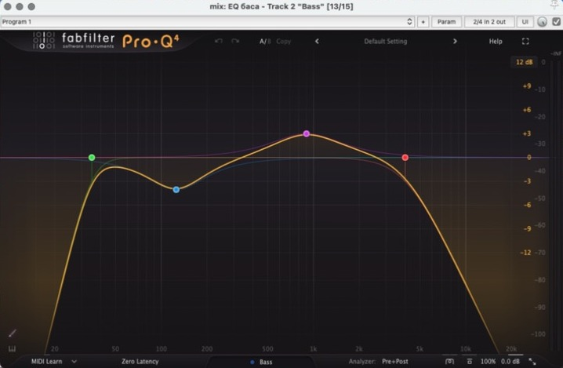 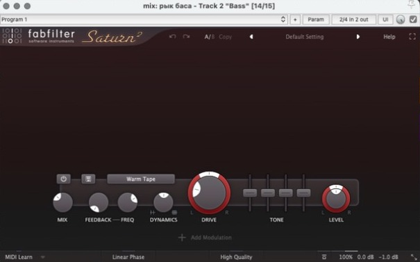 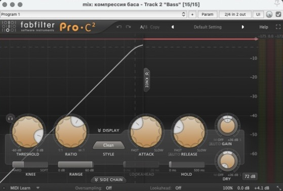
Гитары.
| Плагин | Параметры | Зачем |
|---|---|---|
| Pro-Q 4 «EQ гитары» (Guitar R и Odin) | Low Cut 100 Гц; High Cut 11 кГц; Bell 250 Гц −3 дБ Q 2; Bell 2 кГц +2 дБ | меньше мути, у Odin нет широкого низа; чёткость |
| Pro-Q 4 «плотность EQ» (шина) | Bell 600 Гц +3.5 дБ Q 0.6; Bell 180 Гц −2 дБ | заполнить провал середины; развести с басом |
| Saturn 2 «плотность сатурация» | Warm Tape, drive 15%, mix 40% | плотность за счёт гармоник |
| Pro-C 2 «шина гитар» | Bus, 2:1, колено 6, атака 30 мс, release 100 мс, порог −2, makeup +1.5 | гитары одной стеной, 1–2 дБ подавления (Nail The Mix) |
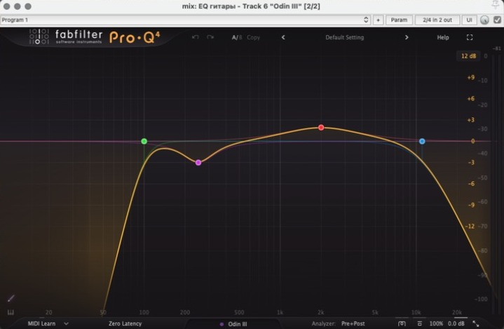 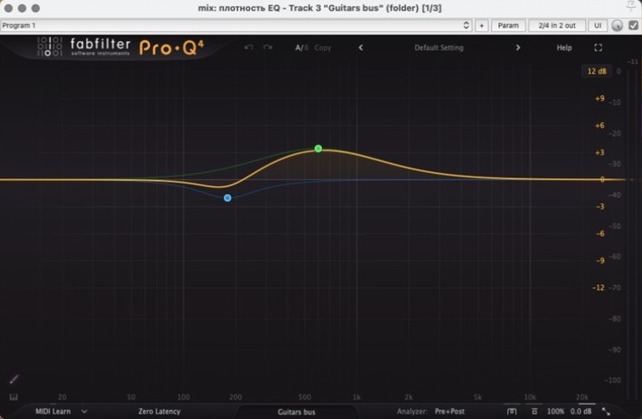 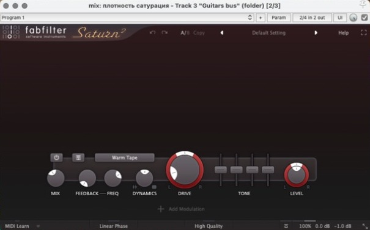 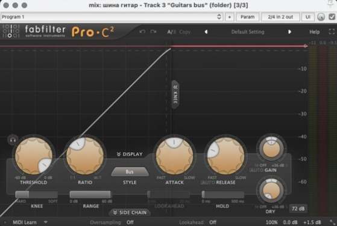
Общая комната (склейка).
| Плагин | Параметры | Зачем |
|---|---|---|
| Pro-R 2 «общая комната» | Space 0.9 с, pre-delay 25 мс, mix 100% | ударные и гитары в одном помещении |
| Pro-Q 4 «EQ комнаты» | Low Cut 250 Гц; High Cut 9 кГц | ревер без низа и резкого верха |
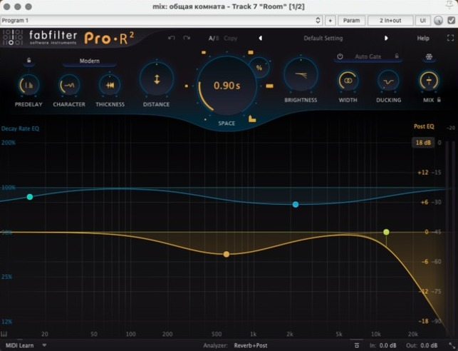 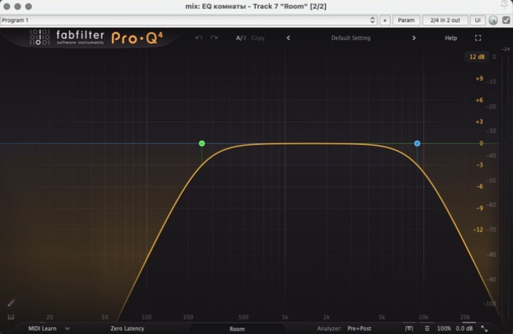
Мастер.
| Плагин | Параметры | Зачем |
|---|---|---|
| Ozone 12 | выключен, не удалён | моя прошлая цепочка, оставлена для сравнения |
| Pro-Q 4 «тон мастера» | Low Cut 25 Гц | чистка инфранизких |
| Pro-C 2 «склейка» | Bus, 2:1, атака 10 мс, auto release, порог −8.6, makeup +2.1 | общая склейка, ~2 дБ |
| Pro-L 2 «лимитер» | Modern, gain +3.5 дБ, потолок −1 dBTP, true peak, oversampling 4x | −10 LUFS без пиков за нулём |
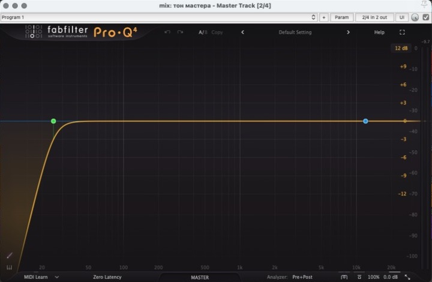 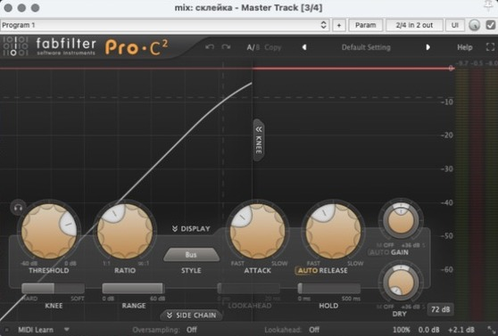 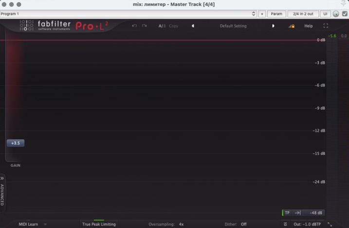
Где фреймворк ошибался и как это поймали
| Шаг | Что вышло | Как поймали | Исправление |
|---|---|---|---|
| пороги компрессоров «на глаз» | бас просел на 16.6 дБ, ударные на 9 | замер стемов «было/стало» | колено Pro-C 2 по умолчанию 18 дБ → 6 |
| порог по симуляции компрессора в Python | на шине гитар обещал 1.5 дБ, плагин давил 8.5 | индикатор Pro-C 2 на скриншоте | читать настоящее подавление через GainReduction_dB, пока REAPER играет припев |
| калибровка | 2–3 прохода по 18 с звука | среднее подавление сверено со звуком: ±0.05 дБ | бас 4.0, ударные 3.0, гитары 1.5, мастер 2.1 дБ |
| лимитер | первый gain дал −7.7 LUFS — пережато | замер LUFS | gain +3.5 дБ → −9.98 LUFS с первого раза |
Было → стало
| до | после | |
|---|---|---|
| громкость мастера | −10.45 LUFS | −9.98 LUFS |
| пиковый уровень | +0.27 dBTP | −0.95 dBTP |
| горб 125 / 198 Гц | +4.2 / +2.7 дБ | +2.8 / +2.0 дБ |
| гитары на 2.5–5 кГц | −10…−17 дБ от мастера | −7 дБ |
| гитары на 315 Гц–2.5 кГц | −8…−16 дБ | −3.5…−4.4 дБ: держат середину |
| PSR | 9.2 | 7.8 |
Что осталось:
- Провал 400 Гц–1 кГц почти не ушёл. Эквалайзером его не вытянуть, это тембр гитары: пробовать пресет или звукосниматель Odin.
- Плотность громкости на пределе: PSR 7.8 при рекомендуемых ≥ 8. Если на слух пережато — убавить склейку или выбрать цель −11 LUFS.
От автора
На универсальность не претендую — просто показываю свои эксперименты. Может, кому-то пригодится.
Скиллы и скрипты можно скачать комплектом, но «скачал и запустил» может не сработать: у вас другие плагины, пути и версии. Надёжнее отдать папку комплекта самому Claude вместе с промптом-установщиком (он лежит в комплекте, INSTALL-PROMPT.md): Claude проверит, что работает, поставит недостающее, разложит скиллы и спросит, на какие фразы их подключать. Всё собрано под macOS; под Windows промпт просит Claude сначала переписать скрипты и пути под неё.
Если интересно — подписывайтесь, я тут пощу всякое:
- Telegram: Отряд Котовскага
- VK: vk.ru/otryad_kotovskaga